A FOUR-PANEL IMAGE EXPERIMENT · 2026
Starryear
Abstract Quartet
同一个摄影瞬间，
四次不同的抵达。
抽象 → 再解释
THE FOUR APPROACHES
01
现实
Original photograph
02
记忆
photo-abstract-editorial
03
抽象
travel-photo-abstraction
04
再解释
Hybrid fusion
CREATION PROMPT
复制口令，
开始你的四联实验。
选择一张原始摄影照片，在 Codex 中粘贴这段完整口令。
项目目标 选择一张原始摄影照片，制作一张“四联纵向影像实验作品”。 整体结构： 四幅等高横向画面上下排列 每幅比例：宽高比 2:1（横幅） 最终整体比例：1:2（竖版） 第一幅：原始照片 第二幅：photo-abstract-editorial 第三幅：travel-photo-abstraction 第四幅：两种语言融合版 整体不是简单滤镜，而是围绕同一个摄影瞬间进行： 现实 → 记忆 → 抽象 → 再解释 第二联 Transform this photograph into an editorial visual memory piece. Keep the original spatial structure and emotional atmosphere. Do not simply apply filters. Extract the essential elements: light, texture, composition, silhouette, rhythm and negative space. Create a poetic editorial abstraction: soft paper texture, subtle material feeling, minimal artistic composition, museum catalog aesthetic. The image should feel like a remembered scene, not an illustration. Preserve the photographic origin. Avoid excessive fantasy. 第三联 Abstract this travel photograph into a minimal visual study. Analyze the image structure: foreground, middle ground, background, light direction, main shapes and visual balance. Reduce unnecessary details. Reconstruct the scene with: minimal composition, clean geometry, quiet atmosphere, Japanese contemporary design feeling, visual research style. The result should look like an analytical abstraction of a real place, not a painting. Keep the original emotional temperature. 第四联 Combine the emotional memory style of editorial abstraction with the structural discipline of travel photo analysis. Create a hybrid visual language: half documentary photography, half abstract memory. Keep: the original scene identity, the original light, the original spatial relationship. Add: poetic atmosphere, minimal structure, quiet Japanese aesthetic, sense of time and distance. The image should feel like: a real place remembered through a dream. Create a vertical four-panel artwork. Canvas ratio: 1:2. Four equal horizontal panels stacked vertically. Panel 1: Original photograph. Panel 2: photo-abstract-editorial interpretation. Panel 3: travel-photo-abstraction interpretation. Panel 4: Hybrid fusion interpretation. Maintain equal height. No borders. No labels. No text. No logos. The four images should feel like four stages of the same memory.
ONE SKILL
BY STARRYEAR
Starryear-Abstract-Quartet
FOUR-STAGE METHOD
现实 · 记忆 · 抽象 · 再解释
SELECTED STUDIES
十二次观看
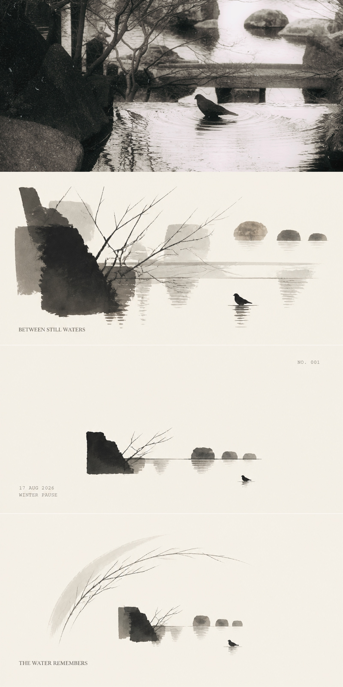
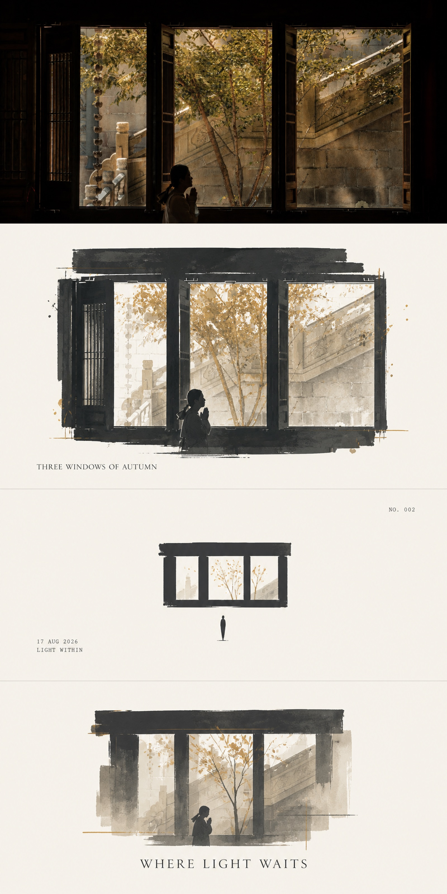
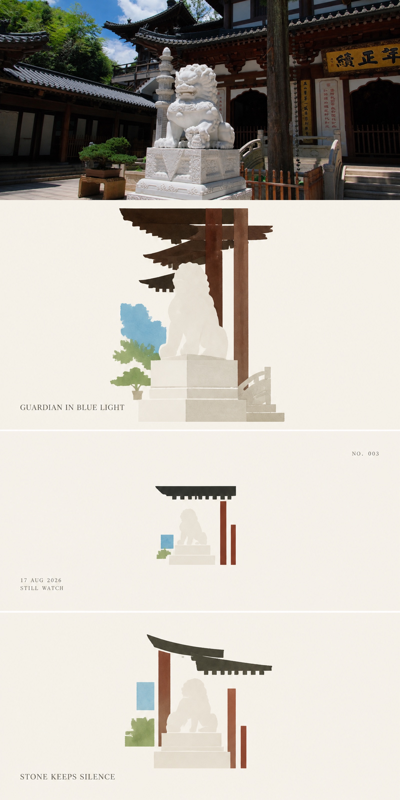
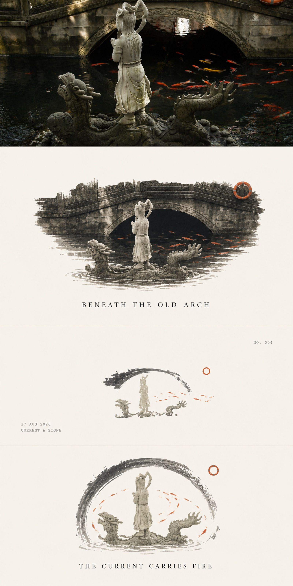
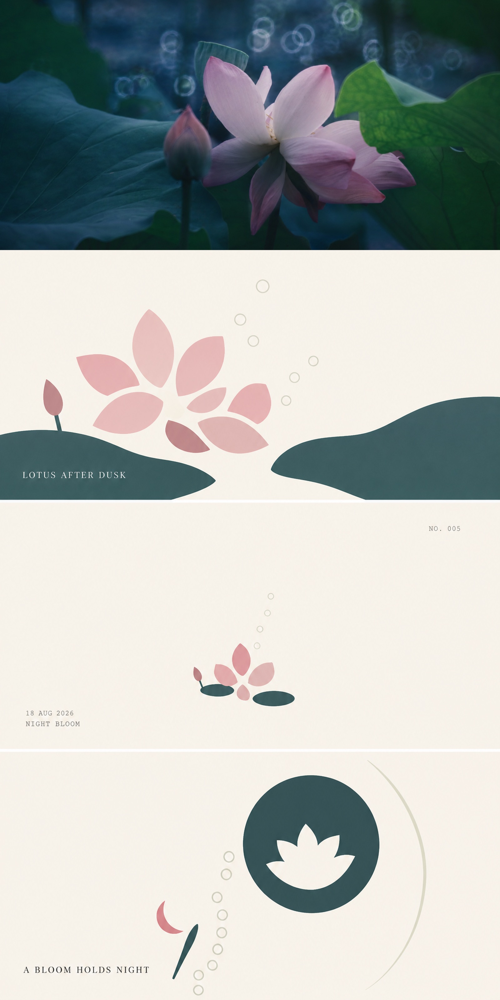
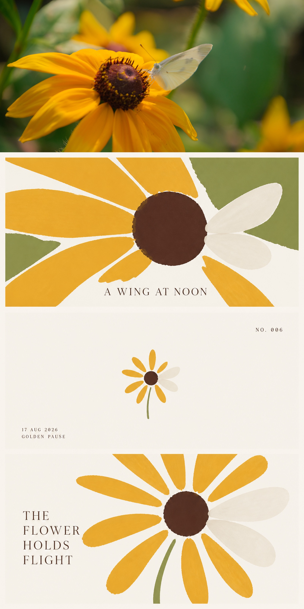
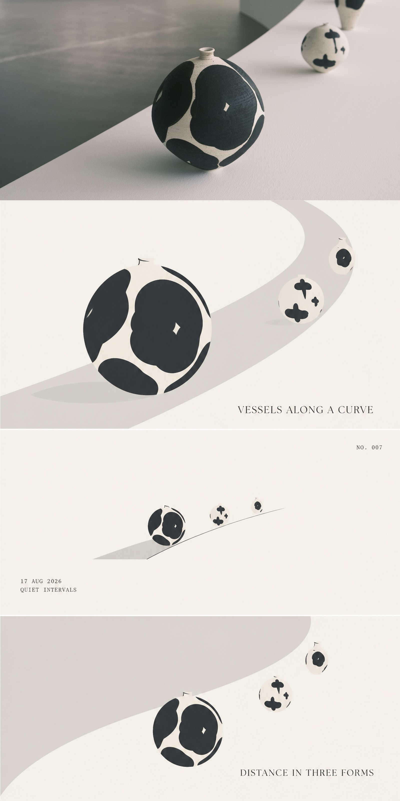
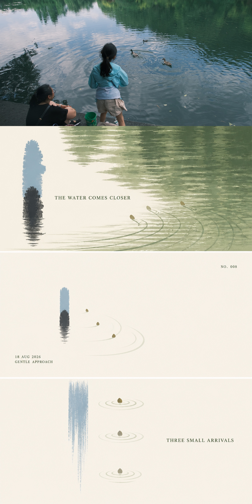
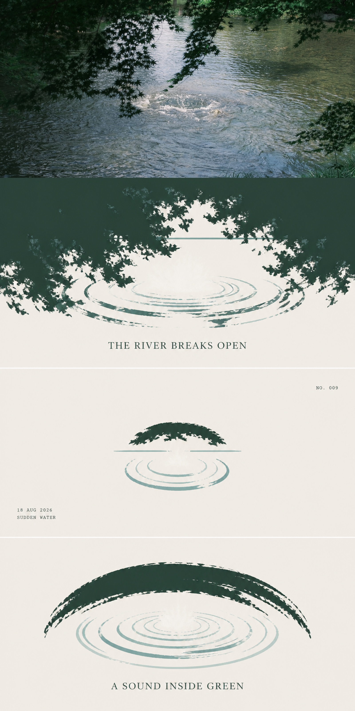
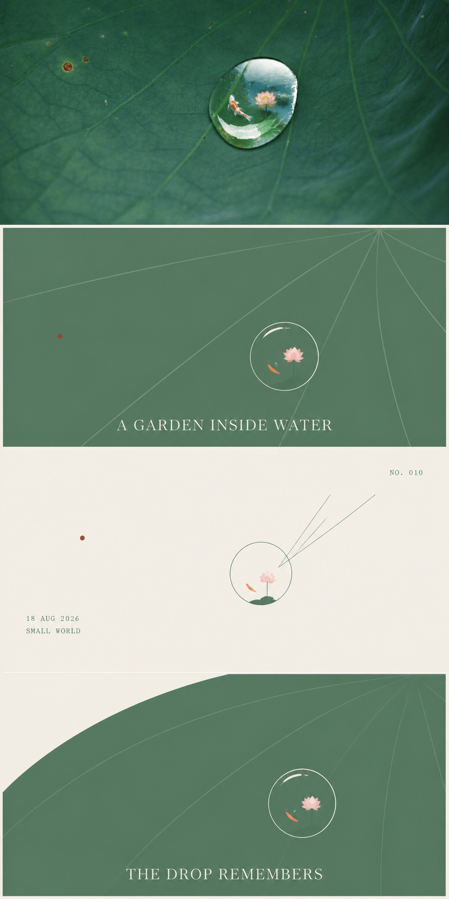
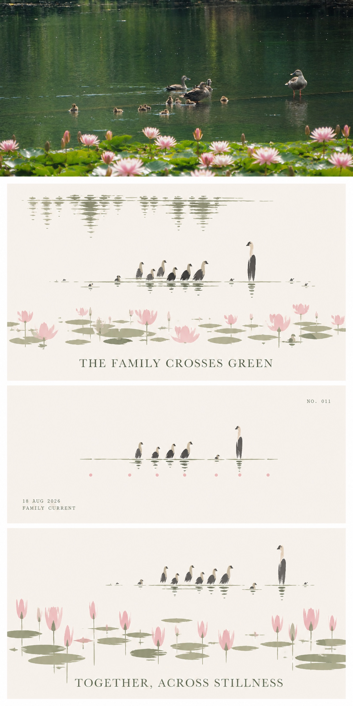
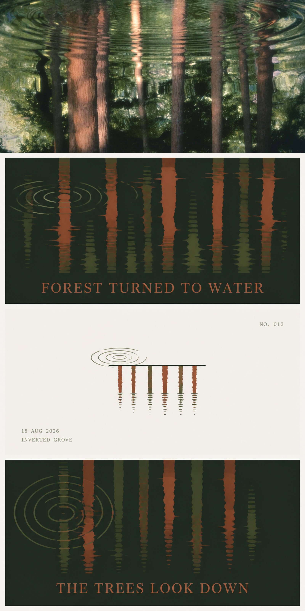